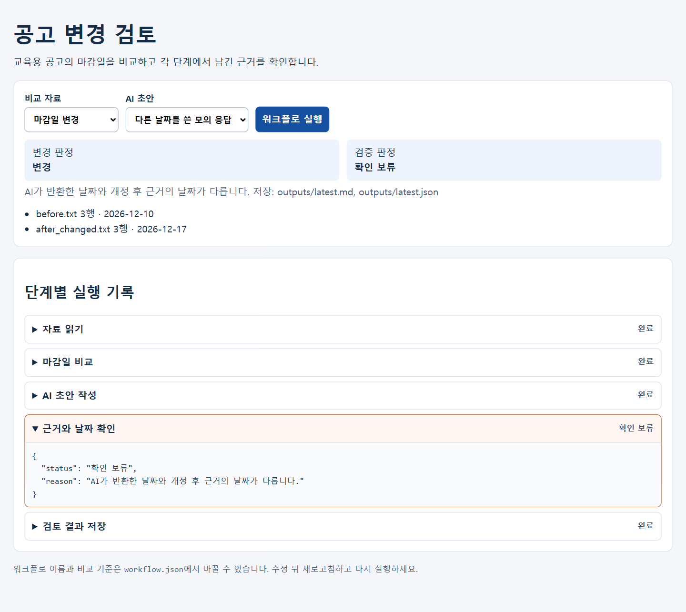

4회차 · · 13:30–17:30
내 업무를 처리하는
프로그램 만들기
반복하는 일 하나를 골라 내 손으로 실행 순서를 정합니다. Claude Code로 만들고, 결과가 틀리면 어느 단계에서 값이 달라졌는지 찾아 고칩니다.
개인 실습 시작수업 일정14:10 첫 요청 · 15:10 첫 실행
- 13:30–13:55
- 수학 난제, AGI, 반례 실습
- 13:55–14:10
- Team 계정 연결 확인, 세 줄로 설계하고 첫 요청
- 14:10–14:40
- 내 도구 첫 버전 만들기
- 14:40–14:50
- 휴식
- 14:50–15:10
- 내 입력으로 첫 실행
- 15:10–15:35
- 파일 트리, 워크플로우, AI 호출 따라가기
- 15:35–16:25
- 기능 개선 또는 API·MCP·CPU 모델 중 선택
- 16:25–16:35
- 휴식
- 16:35–17:05
- 새 입력과 오류 입력으로 검증
- 17:05–17:30
- 저장하고 다시 열어 실행
15:10–15:35
실행 버튼 뒤에서 일어나는 일
파일 트리를 보면 어느 파일을 열어야 할지 알 수 있고, 워크플로우를 보면 어느 단계까지 값이 제대로 전달됐는지 알 수 있습니다.
파일 트리에서 고칠 곳을 찾습니다
- workflow.json
- 단계의 이름과 순서를 바꿀 때 엽니다.
- runner.py
- 단계를 읽고 실행하는 규칙을 볼 때 엽니다.
- steps/
- 날짜를 읽거나 비교하는 방식을 고칩니다.
- samples/
- 처리할 입력 예시를 넣습니다.
- outputs/runs/
- 어느 단계에서 값이 달라졌는지 찾습니다.
실제 파일 목록과 기록 화면

워크플로우에서 입력과 출력을 따라갑니다
실행기는 workflow.json을 읽고 앞 단계의 출력을 다음 상자에 넘깁니다. 예제에서 날짜가 빠지면 비교를 건너뜁니다. 파일을 쓰는 버전은 날짜를 찾지 못한 위치와 보류 판정도 저장합니다.
- 파일 읽기원문과 줄 번호
- 마감일 비교이전 날짜와 새 날짜
- AI 초안 선택새 날짜를 담은 문장
- 검사 후 저장검토표 또는 보류 사유

differenceDays: 7을 내보낸 기록을 확인합니다.AI가 프로그램을 만들 때, 프로그램이 AI를 부를 때
만드는 중에는 Claude Code가 모델이 요청한 파일 읽기, 수정, 명령 실행을 권한에 따라 수행합니다. 실행 결과가 모델에 돌아가면 그 결과를 보고 또 수정할 수 있습니다.
완성한 도구를 쓰는 중에는 내 실행기가 순서를 정합니다. 파일 읽기와 날짜 비교는 PC의 코드가 합니다. AI 단계가 켜져 있으면 그때 필요한 값과 지시만 모델에 넘깁니다.
- 내 PC요청 만들기새 마감일 2026-12-17
한국어 초안 한 문장 - Claude Code 경유Claude 서버날짜와 문장을 지정된 형식으로 반환
- 내 PC응답 대조하기새 마감일과 다르면 확인 보류
모델은 받은 지시문과 자료를 작은 단위인 토큰으로 처리하고, 그 맥락을 참고해 다음 토큰을 이어 응답을 만듭니다. 코드가 필요한 항목을 읽도록 deadline과 draft 두 필드로 받습니다. 형식을 잘 지킨 문장이라도 날짜가 틀릴 수 있으므로, 원본에서 추출한 날짜와 다시 비교합니다.
실제 호출 오류와 모의 응답 검증 화면
테스트 PC에서 CLI 상태는 연결로 표시됐지만 실제 호출은 로그인 만료를 반환했습니다. 모의 실행에는 의도적으로 이전 날짜를 넣어서, 인증 문제와 무관하게 검사 단계가 어떻게 작동하는지 확인했습니다.

is_error: true와 인증 만료 메시지
16:35–17:30
새 입력으로 시험하고 다시 엽니다
처음 성공한 입력을 보관합니다. 조건이 다른 입력과 값이 빠진 입력을 넣기 전에, 각각 어떤 결과가 나와야 하는지 적습니다.
| 무엇을 넣을까? | 어떤 결과가 나와야 할까? |
|---|---|
| 마감일이 다른 공고 | 변경 전후 날짜와 원문 위치가 저장됩니다. |
| 날짜가 그대로인 새 공고 | 마감일 그대로가 표시됩니다. |
| 날짜가 빠진 공고 | 어느 입력을 확인해야 할지 알려줍니다. |
| 틀린 날짜를 반환한 모의 AI | AI의 초안을 확인 보류로 남깁니다. |
입력을 비우면 어디서 멈추는지 보기

원인이 있는 단계 하나를 고친 뒤, 실패한 입력과 처음 성공한 입력을 둘 다 다시 실행합니다. 두 결과가 맞으면 도구를 닫았다가 같은 폴더에서 다시 엽니다.
실행 명령, 시험한 입력과 결과, 다음에 바꿀 한 가지를 자기 폴더에 저장합니다.
원문과 출처
- 리만 가설 · 알푀게의 공개문, Lean·Mathlib 공동 검증 발표, Clay 문제 설명, Odlyzko 영점 자료, Lean 선언 의존성 데이터, Mirza의 공개 증명 탐색기
- 단위거리 · OpenAI 발표, Alon 외의 반례 검토
- P 대 NP · Clay의 미해결 문제, Stephen Cook의 문제 정의
- AI 능력의 수준 · Morris 외의 AGI 평가 틀, 버너 빈지의 특이점 논문
- 모델 요청 · Claude의 도구 호출, 컨텍스트, CLI 구조화 응답
영점 그래프는 mpmath로 계산했습니다. 실행 캡처에는 교육용 가상 입력을 사용했습니다.